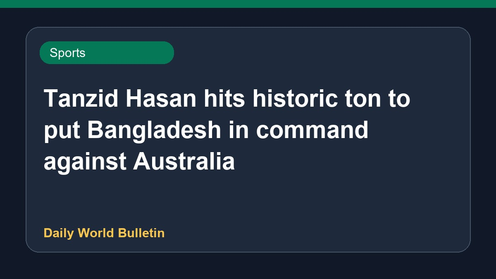

Tanzid Hasan hits historic ton to put Bangladesh in command against Australia

During the Darwin Test, Tanzid Hasan Tamim justified his selection by scoring a remarkable maiden century, putting Bangladesh in a commanding position on Day 2. His performance helped Bangladesh secure an 88-run lead against Australia, whose bowlers struggled on a difficult day. Meanwhile, former captain Ricky Ponting criticised Australian selectors following the team's poor showing on the field. Further details regarding the ongoing match remain limited as proceedings continue.
Original source: Sports News Sources
AUS vs BAN, Darwin Test: Tanzid Hasan Tamim vindicates selection gamble with historic ton - Cricbuzz ↗
AUS vs BAN, Darwin Test: Tanzid Hasan Tamim vindicates selection gamble with historic ton - Cricbuzz ↗